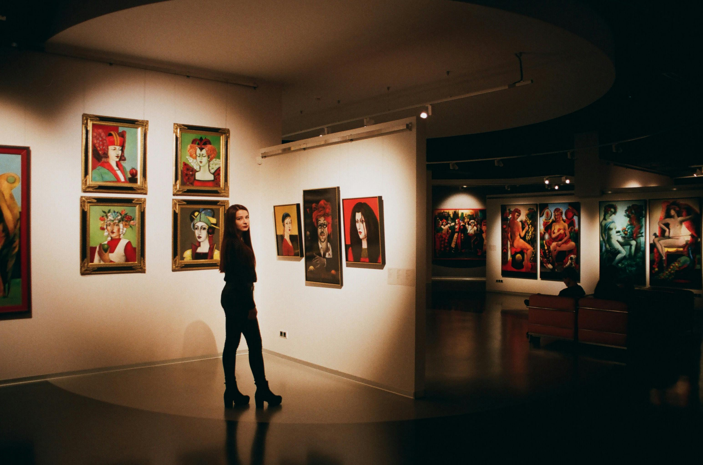
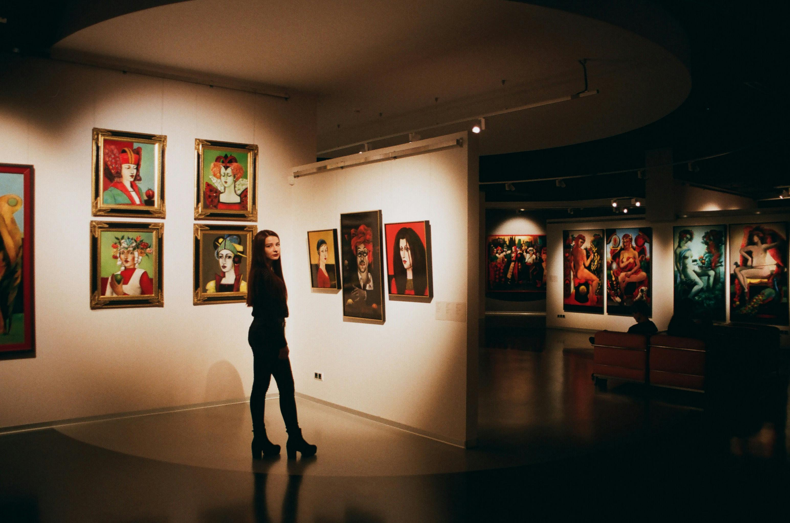

Лувр, Париж
Лувр - один из крупнейших и наиболее известных музеев мира, расположенный в Париже, Франция.
Відкрийте для себе найкращі музеї по всьому світу. Дізнайтеся про їх історію, колекції та багато іншого.
Наш сайт надає інформацію про найцікавіші музеї з усього світу. Ми прагнемо ділитися знаннями та надихати наших відвідувачів на відвідування цих культурних скарбів.
Лувр - один из крупнейших и наиболее известных музеев мира, расположенный в Париже, Франция.
Британский музей - один из крупнейших музеев мира, находящийся в Лондоне, Великобритания.
Метрополитен-музей - один из крупнейших художественных музеев мира, расположенный в Нью-Йорке, США.
Музей Прадо - один из самых важных музеев искусства в мире, расположенный в Мадриде, Испания.
Музей Гуггенхайма - это музей современного искусства, расположенный в Бильбао, Испания.
Музей Ван Гога - это искусственный музей в Амстердаме, Нидерланды, посвященный работам Винсента ван Гога и его современникам.
Музей Акрополя - это археологический музей, посвященный находкам с Акрополя Афин, Греция.
Музей Пергамон - один из крупнейших музеев Германии, расположенный в Берлине, Германия.


 
